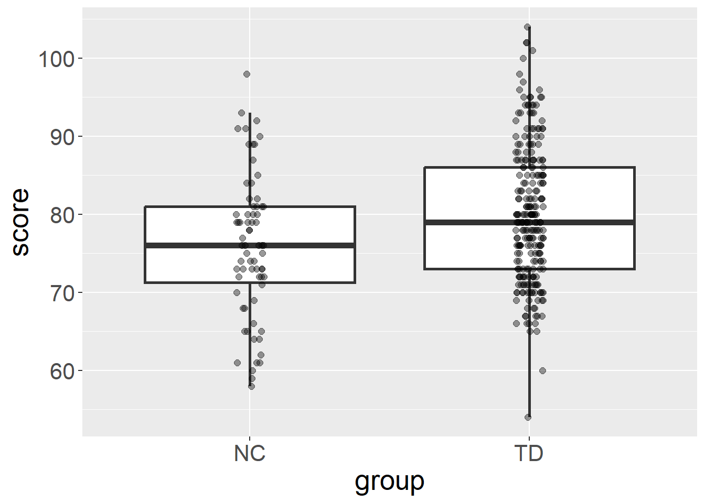
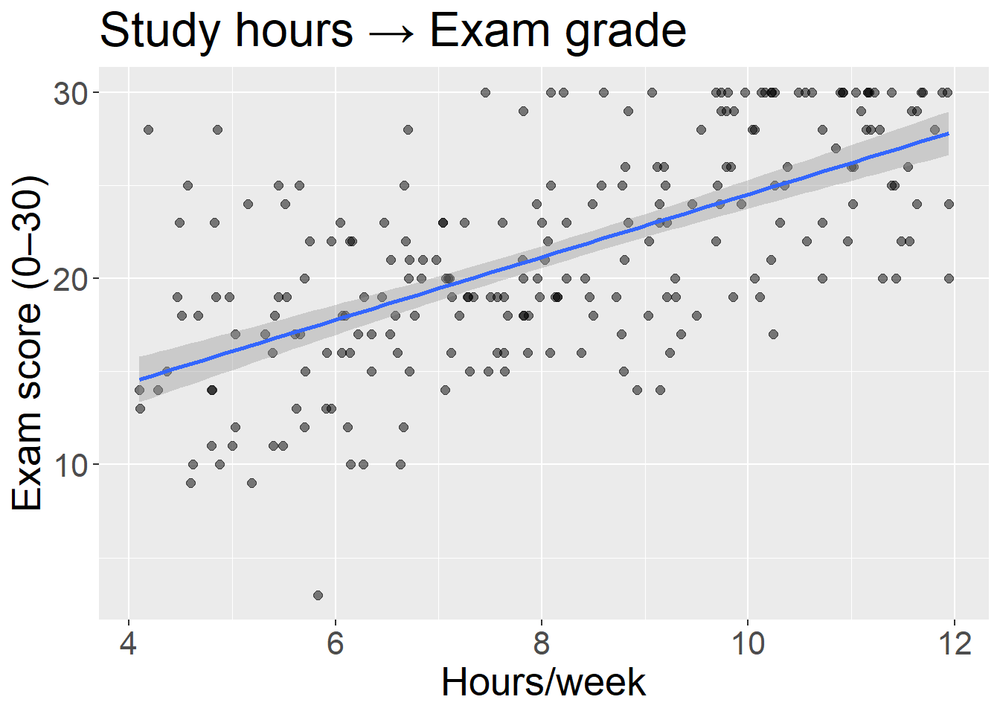
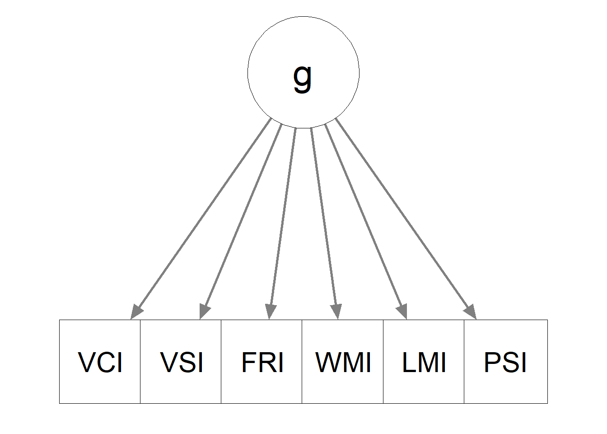
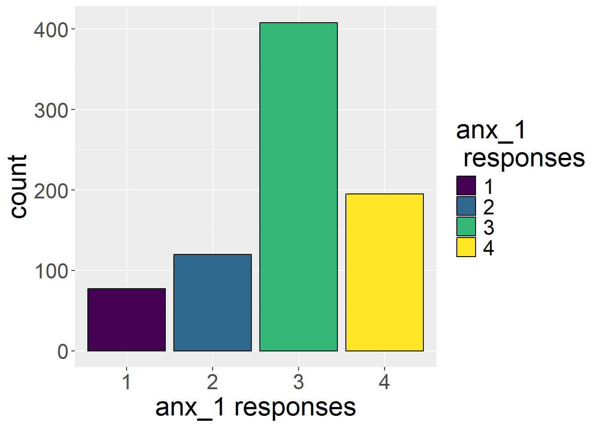
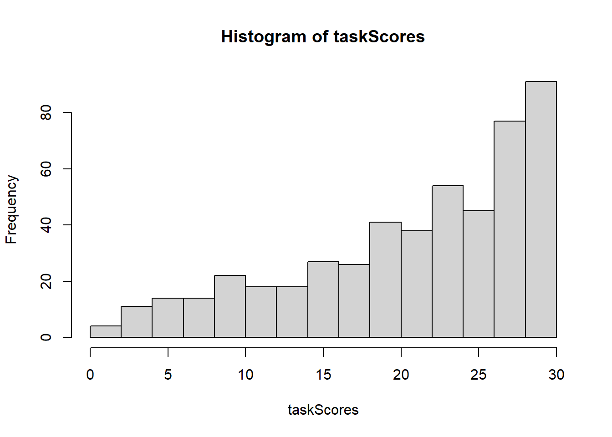
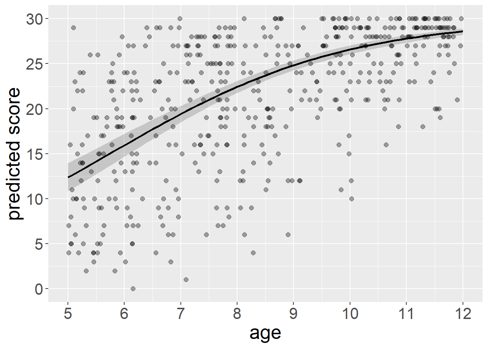

# first install packages with install.packages() if needed
library(effectsize) # useful for functions like cohens
library(MASS) # useful for mvrnorm(), multivariate correlations
library(semTools) # useful for mvrnonnorm(), non-normal multivariate correlations
library(lavaan) # useful for latent variable estimation
library(lme4) # useful for mixed-effects models
library(ggplot2) # beautiful data visualizationExercises – Basics of Statistical Data Simulation in R
Basics of R for Data Science
Why simulate?
Simulation helps you understand data and data-generating processes. Unlike in the real world, in simulations you know the ground truth precisely (true effect sizes, correlations, reliability), which helps you:
- see whether you actually understood the hypothesized data-generating process;
- see whether statistical methods work appropriately to recover parameters;
- infer non-obvious characteristics of the data implied by the ground truth (e.g., how minor misspecifications of models impact results).
This small tutorial/exercise guides you through basic simulation scenarios that might be useful as a basis towards more complex but common psychological designs.
- Some useful packages.
- Two groups mean difference.
- Simple linear regression.
- Correlated variables.
- Latent variable with continuous indicators.
- Latent variable with ordinal items.
- Binary outcome and logistic regression.
Keep
set.seed(...)for exact reproducibility.
Part 0 - Some useful packages
Part 1 - Two groups mean difference
Imagine you assess attention scores in a population with a neurodevelopmental condition (NC) and compare it with a typically-developing (TD) population. Let’s assume a medium-sized effect (-0.5 SD)
Define design parameters
n_TD = 250
n_NC = 70
mu_TD = 80
mu_NC = 75.5
sd_common = 9Generate data, simple way
set.seed(0)
# sample TD participants
df_TD = data.frame(
group = "TD",
score = round(rnorm(n=n_TD, mean=mu_TD, sd=sd_common))
)
# sample NC participants
df_NC = data.frame(
group = "NC",
score = round(rnorm(n=n_NC, mean=mu_NC, sd=sd_common))
)
# combine dataframes
df = rbind(df_TD, df_NC)
head(df) group score
1 TD 91
2 TD 77
3 TD 92
4 TD 91
5 TD 84
6 TD 66Exercise: try to redo the above but generate the whole data.frame at once
Visualize
Code
ggplot(df, aes(x = group, y = score)) +
geom_boxplot(size=1, outliers=F)+
geom_point(alpha=.4, size=2, position=position_jitter(width=.05,height=0))+
theme(text = element_text(size=20))
Analyze
t.test(score ~ group, data = df, var.equal = TRUE)
Two Sample t-test
data: score by group
t = -3.4454, df = 318, p-value = 0.0006467
alternative hypothesis: true difference in means between group NC and group TD is not equal to 0
95 percent confidence interval:
-6.381994 -1.742577
sample estimates:
mean in group NC mean in group TD
75.88571 79.94800 cohens_d(score ~ group, data = df)Cohen's d | 95% CI
--------------------------
-0.47 | [-0.73, -0.20]
- Estimated using pooled SD.Part 2 - Simple linear regression
Do weekly study hours predict exam scores in the student population? Let’s assume a positive linear relationship.
Parameters
n = 230
beta0 = 7 # intercept (score at 0 hours)
beta1 = 1.8 # points per extra study hour
sigma = 5 # residual SDGenerate predictor and outcome
set.seed(0)
hours = runif(n, 4, 12) # 4–12 hours/week, uniformly distributed
grade = beta0 + beta1*hours + rnorm(n, 0, sigma)
df = data.frame(hours = round(hours,2),
grade = round(grade))
# censored scores
df$grade[df$grade > 30] = 30
df$grade[df$grade < 0] = 0
head(df) hours grade
1 11.17 30
2 6.12 12
3 6.98 21
4 8.58 25
5 11.27 28
6 5.61 17Visualize + fit model
ggplot(df, aes(hours, grade)) +
geom_point(alpha = .5, size=2) +
geom_smooth(method = "lm", se = TRUE) +
labs(title = "Study hours → Exam grade", x = "Hours/week", y = "Exam score (0–30)")+
theme(text = element_text(size=20))`geom_smooth()` using formula = 'y ~ x'
fit = lm(grade ~ hours, data = df)
summary(fit)
Call:
lm(formula = grade ~ hours, data = df)
Residuals:
Min 1Q Median 3Q Max
-14.4855 -3.3062 -0.0342 3.1104 13.2799
Coefficients:
Estimate Std. Error t value Pr(>|t|)
(Intercept) 7.6549 1.1371 6.732 1.34e-10 ***
hours 1.6862 0.1353 12.459 < 2e-16 ***
---
Signif. codes: 0 '***' 0.001 '**' 0.01 '*' 0.05 '.' 0.1 ' ' 1
Residual standard error: 4.462 on 228 degrees of freedom
Multiple R-squared: 0.405, Adjusted R-squared: 0.4024
F-statistic: 155.2 on 1 and 228 DF, p-value: < 2.2e-16Exercise: increase
nto very large numbers to see how censoring scores (in 0-30) affects the correct recovery of true parameters. Then try to further increase the intercept (beta0) to understand how easy exams dampen the effect of studying on grades.
Part 4 - Latent variable with continuous indicators
Imagine you want to fit a general intelligence latent variable model (only strata II and III), where “g” (General Mental Ability) is the latent variable.

Generate data
Tactic: you simulate the latent factor (g) as if you could observe it, then you pretend you had never actually observed it.
set.seed(0)
n = 1200
g = rnorm(n, 0, 1)
VCI = 0.75*g + rnorm(n,0,.66)
VSI = 0.80*g + rnorm(n,0,.60)
FRI = 0.95*g + rnorm(n,0,.31)
WMI = 0.70*g + rnorm(n,0,.71)
LMI = 0.45*g + rnorm(n,0,.89)
PSI = 0.50*g + rnorm(n,0,.87)
df = data.frame(VCI, VSI, FRI, WMI, LMI, PSI)
for(i in 1:ncol(df)) df[,i] = round(scale(df[,i])*15+100)
df[1:10,] VCI VSI FRI WMI LMI PSI
1 105 128 117 107 103 115
2 81 93 92 102 80 110
3 123 106 124 134 121 118
4 116 116 127 95 117 123
5 112 112 115 102 129 110
6 60 68 82 79 95 84
7 100 81 83 76 98 83
8 100 106 96 95 71 92
9 96 95 98 96 119 131
10 133 144 131 118 127 125Fit latent variable model
model = "
g =~ VCI + VSI + FRI + WMI + LMI + PSI
"
fit = cfa(model=model, data=df, std.lv=T)
summary(fit, standardized=T)lavaan 0.6-19 ended normally after 23 iterations
Estimator ML
Optimization method NLMINB
Number of model parameters 12
Number of observations 1200
Model Test User Model:
Test statistic 6.612
Degrees of freedom 9
P-value (Chi-square) 0.677
Parameter Estimates:
Standard errors Standard
Information Expected
Information saturated (h1) model Structured
Latent Variables:
Estimate Std.Err z-value P(>|z|) Std.lv Std.all
g =~
VCI 11.132 0.380 29.289 0.000 11.132 0.743
VSI 12.167 0.367 33.188 0.000 12.167 0.811
FRI 14.243 0.336 42.366 0.000 14.243 0.949
WMI 10.344 0.391 26.486 0.000 10.344 0.689
LMI 6.607 0.425 15.534 0.000 6.607 0.441
PSI 6.973 0.423 16.494 0.000 6.973 0.465
Variances:
Estimate Std.Err z-value P(>|z|) Std.lv Std.all
.VCI 100.725 4.616 21.819 0.000 100.725 0.448
.VSI 76.847 3.871 19.851 0.000 76.847 0.342
.FRI 22.335 2.975 7.507 0.000 22.335 0.099
.WMI 118.272 5.228 22.624 0.000 118.272 0.525
.LMI 181.094 7.531 24.046 0.000 181.094 0.806
.PSI 176.276 7.352 23.978 0.000 176.276 0.784
g 1.000 1.000 1.000Part 5 - Latent variable with ordinal items
Questionnaires often present items with Likert-scale response format, so it’s ideal (and often neglected) to simulate ordinal data. Here’s how you can do it: “ordinal” can be understood as nothing other than a continuum “cut” at some thresholds.
Generate data
set.seed(0)
n = 800
Anxiety_Latent = rnorm(n,0,1) # true latent score
Anx_1 = 0.5*Anxiety_Latent + rnorm(n)
Anx_2 = 0.9*Anxiety_Latent + rnorm(n)
Anx_3 = 0.6*Anxiety_Latent + rnorm(n)
Anx_4 = 0.7*Anxiety_Latent + rnorm(n)
Anx_5 = 0.8*Anxiety_Latent + rnorm(n)
# inspect underlying continua of items
cbind(Anx_1, Anx_2, Anx_3, Anx_4, Anx_5)[1:10,] Anx_1 Anx_2 Anx_3 Anx_4 Anx_5
[1,] -0.79255452 0.5221638 2.1153732 2.4173488 1.803166172
[2,] -1.83246109 2.5341977 -0.5178649 0.8674406 -1.398358093
[3,] 2.04413576 2.6971298 -0.3086810 0.2348041 0.862330592
[4,] -0.28345992 1.1069825 0.8016823 2.2658870 -0.004421465
[5,] -0.29716933 -0.4602456 0.9925636 -2.0815608 -0.492085697
[6,] -1.90470683 -0.9441400 -2.3400150 -1.3037247 -0.990497966
[7,] 0.04848954 -1.1976697 -1.3832052 -0.5058338 -0.645182455
[8,] 0.38062856 -0.6584925 0.9348622 0.0433003 -1.539723494
[9,] 1.18536374 0.1595526 -0.5716023 -0.2306450 -0.293823278
[10,] 0.74029034 1.8906363 3.0477846 1.1599447 2.514604611# make ordinal with 4 categories (using "cut")
df = data.frame(
anx_1 = cut(Anx_1, c(-Inf, runif(3,-2,2), +Inf)),
anx_2 = cut(Anx_2, c(-Inf, runif(3,-2,2), +Inf)),
anx_3 = cut(Anx_3, c(-Inf, runif(3,-2,2), +Inf)),
anx_4 = cut(Anx_4, c(-Inf, runif(3,-2,2), +Inf)),
anx_5 = cut(Anx_5, c(-Inf, runif(3,-2,2), +Inf))
)
# inspect dataset
df[1:10, ] anx_1 anx_2 anx_3 anx_4 anx_5
1 (-0.862,0.775] (-0.729,1.52] (1.8, Inf] (0.243, Inf] (1.1, Inf]
2 (-Inf,-1.49] (1.88, Inf] (-1.82,-0.399] (0.243, Inf] (-1.63,-0.348]
3 (0.775, Inf] (1.88, Inf] (-0.399,1.8] (-0.515,0.243] (-0.348,1.1]
4 (-0.862,0.775] (-0.729,1.52] (-0.399,1.8] (0.243, Inf] (-0.348,1.1]
5 (-0.862,0.775] (-0.729,1.52] (-0.399,1.8] (-Inf,-0.703] (-1.63,-0.348]
6 (-Inf,-1.49] (-Inf,-0.729] (-Inf,-1.82] (-Inf,-0.703] (-1.63,-0.348]
7 (-0.862,0.775] (-Inf,-0.729] (-1.82,-0.399] (-0.515,0.243] (-1.63,-0.348]
8 (-0.862,0.775] (-0.729,1.52] (-0.399,1.8] (-0.515,0.243] (-1.63,-0.348]
9 (0.775, Inf] (-0.729,1.52] (-1.82,-0.399] (-0.515,0.243] (-0.348,1.1]
10 (-0.862,0.775] (1.88, Inf] (1.8, Inf] (0.243, Inf] (1.1, Inf]levels(df$anx_1)[1] "(-Inf,-1.49]" "(-1.49,-0.862]" "(-0.862,0.775]" "(0.775, Inf]" # transform responses to regular ordinal labels 1-4
for(i in 1:ncol(df)) df[,i] = ordered(as.numeric(df[,i]))
# (again) inspect dataset
df[1:10, ] anx_1 anx_2 anx_3 anx_4 anx_5
1 3 2 4 4 4
2 1 4 2 4 2
3 4 4 3 3 3
4 3 2 3 4 3
5 3 2 3 1 2
6 1 1 1 1 2
7 3 1 2 3 2
8 3 2 3 3 2
9 4 2 2 3 3
10 3 4 4 4 4
Fitting model
The model below was not fitted. Reproduce the above and inspect step-by-step, then try to fit it! Also, try to introduce some secondary latent factor that makes residuals correlate, and see how this misfit impacts fit measures and more.
model = "
ANX =~ anx_1 + anx_2 + anx_3 + anx_4 + anx_5
"
fit = cfa(model=model, data=df, std.lv=T, ordered=T)
summary(fit, standardized=T)
fitMeasures(fit, fit.measures=c("chisq","df","pvalue","rmsea.robust","cfi.robust"))
standardizedSolution(fit)
modificationIndices(fit, sort.=T)[1:10,]Part 6 - Binary outcome and logistic regression
Let’s imagine a task (30 items) where accuracy grows with age (in N = 500 children, 5-12 years), but there is also some individual random variability (random intercept / randInt).
Generate data
First of all, set design parameters and simulate data that will allow you to compute probabilities of accuracy… and thus task scores (i.e., randInt and age).
set.seed(0)
k = 30
n = 500
ID = 1:n
randInt = rnorm(n, 0, 1.2)
age = round(runif(n, 5, 12), 2)
# inspect first few cases
cbind(ID, randInt, age)[1:10, ] ID randInt age
[1,] 1 1.515545142 6.86
[2,] 2 -0.391480033 8.72
[3,] 3 1.595759116 9.79
[4,] 4 1.526915186 7.68
[5,] 5 0.497569721 11.68
[6,] 6 -1.847940050 5.83
[7,] 7 -1.114280442 5.27
[8,] 8 -0.353664536 8.53
[9,] 9 -0.006920607 9.05
[10,] 10 2.885584067 10.88Since probability is constrained in (0, 1), probabilities of a correct answer cannot be a linear function of predictors. The logit transformation provides a good tool for constraining probability within its bounds whatever values the predictor might have.
logitScores = -2.9 + 0.50*age + randInt
probabilities = plogis(logitScores)
taskScores = rbinom(n, k, probabilities)
# inspect first few cases
cbind(ID, randInt, age, logitScores, probabilities, taskScores)[1:10,] ID randInt age logitScores probabilities taskScores
[1,] 1 1.515545142 6.86 2.045545 0.8854967 27
[2,] 2 -0.391480033 8.72 1.068520 0.7443154 26
[3,] 3 1.595759116 9.79 3.590759 0.9731627 28
[4,] 4 1.526915186 7.68 2.466915 0.9217897 29
[5,] 5 0.497569721 11.68 3.437570 0.9688583 29
[6,] 6 -1.847940050 5.83 -1.832940 0.1378884 2
[7,] 7 -1.114280442 5.27 -1.379280 0.2011246 5
[8,] 8 -0.353664536 8.53 1.011335 0.7332814 20
[9,] 9 -0.006920607 9.05 1.618079 0.8345301 24
[10,] 10 2.885584067 10.88 5.425584 0.9956168 30The distribution of task scores is quite skewed, but don’t worry: we will use logistic regression, which respects the (non-normal) nature of the response variable.
hist(taskScores, breaks=20)
Fitting model
df = data.frame(ID, age, taskScores)
fit = glmer(cbind(taskScores, k-taskScores) ~ age + (1|ID), data=df,
family = binomial(link="logit"))
summary(fit)Generalized linear mixed model fit by maximum likelihood (Laplace
Approximation) [glmerMod]
Family: binomial ( logit )
Formula: cbind(taskScores, k - taskScores) ~ age + (1 | ID)
Data: df
AIC BIC logLik deviance df.resid
2963.1 2975.8 -1478.6 2957.1 497
Scaled residuals:
Min 1Q Median 3Q Max
-1.47710 -0.24059 0.01701 0.29487 1.31334
Random effects:
Groups Name Variance Std.Dev.
ID (Intercept) 1.386 1.177
Number of obs: 500, groups: ID, 500
Fixed effects:
Estimate Std. Error z value Pr(>|z|)
(Intercept) -2.76046 0.24666 -11.19 <2e-16 ***
age 0.48089 0.02941 16.35 <2e-16 ***
---
Signif. codes: 0 '***' 0.001 '**' 0.01 '*' 0.05 '.' 0.1 ' ' 1
Correlation of Fixed Effects:
(Intr)
age -0.971Code
library(effects)
eff = data.frame(allEffects(fit,xlevels=list(age=seq(5,12,.1)))$"age")
eff$fit = eff$fit*k
eff$lower = eff$lower*k
eff$upper = eff$upper*k
ggplot(eff,aes(x=age,y=fit))+
geom_ribbon(aes(ymin=lower,ymax=upper),alpha=.2)+
geom_line(size=1)+
theme(text=element_text(size=20))+
scale_y_continuous(breaks=seq(0,k,5))+
scale_x_continuous(breaks=seq(0,100,1))+
geom_point(data=df,aes(x=age,y=taskScores),alpha=.35,size=2)+
xlab("age") + ylab("predicted score")
What you can do next
- Change sample size or variability in all cases.
- Introduce a moderator variable (i.e., with multiplicative effects).
- Simulate all observed data in logistic regression (
0/1instead oftaskScores). - Understand conditions under which you might add random slopes.